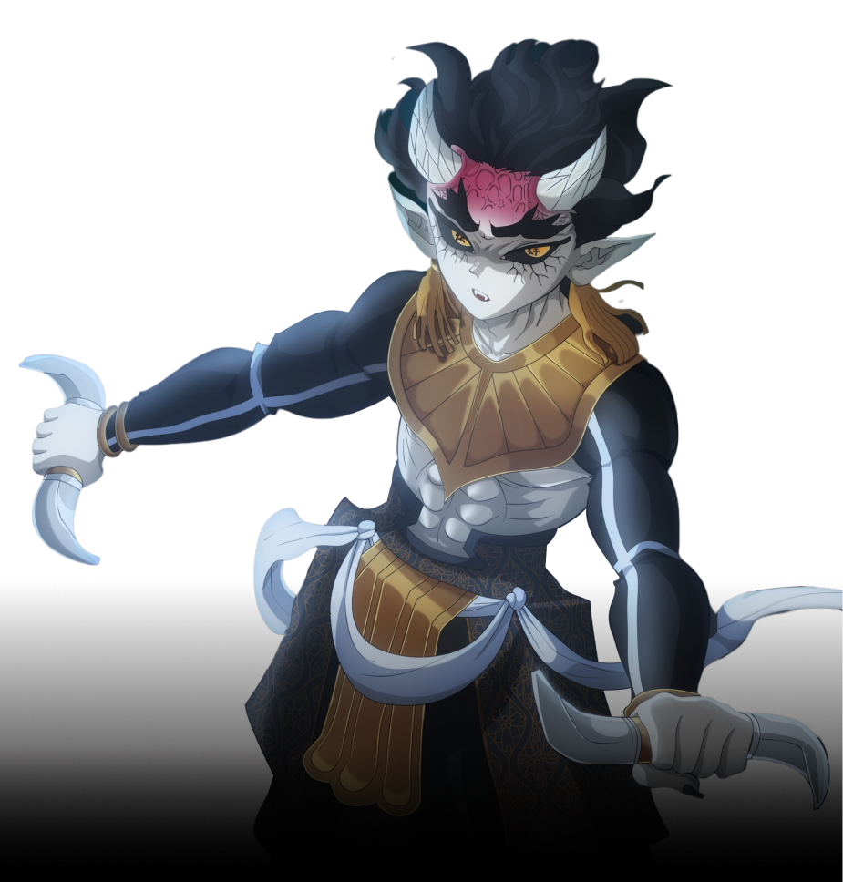
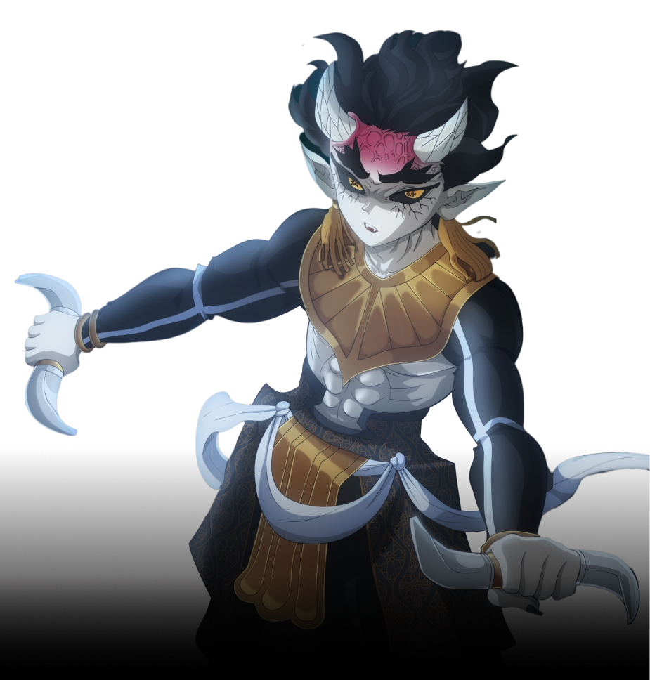
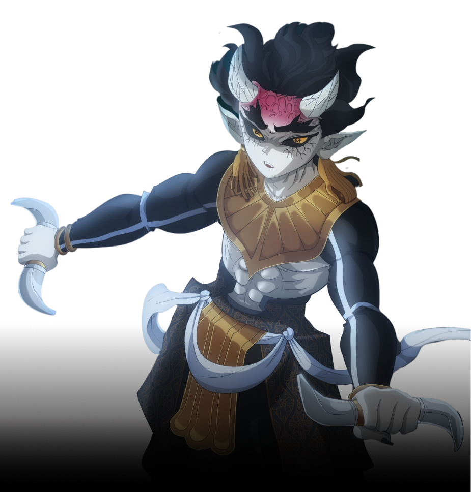

Go Back
Hantengu
Blood Demon art: WEEPING SPEARS
Hantengu, along with Gyokko, are the primary antagonists of the Swordsmith Village Arc of Demon Slayer: Kimetsu no Yaiba. He is a demon affiliated with the Twelve Kizuki, holding the position of Upper Rank Four.
 
